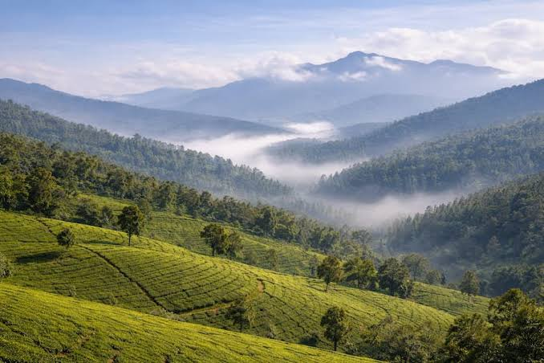
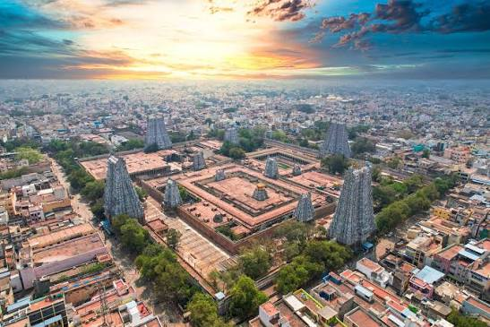
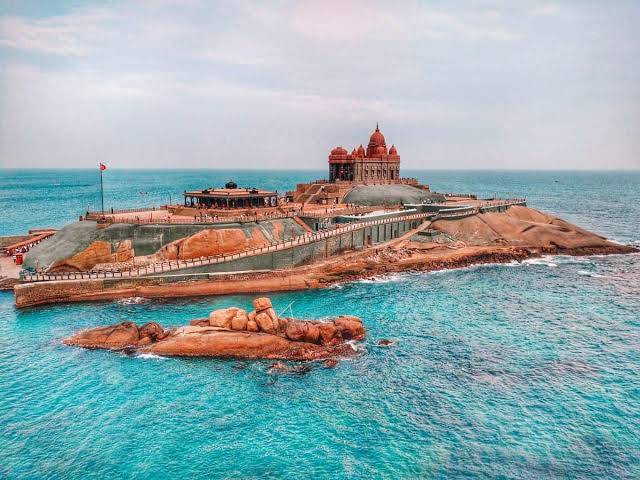
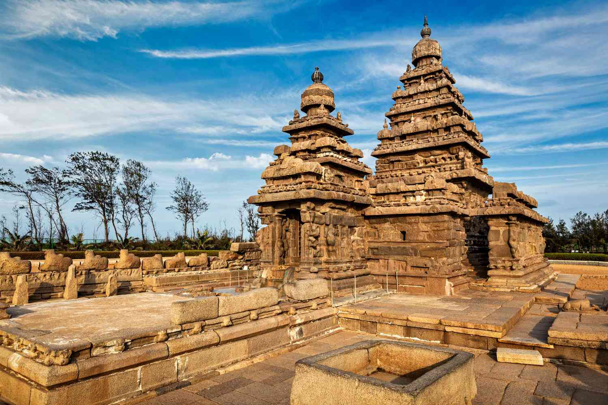
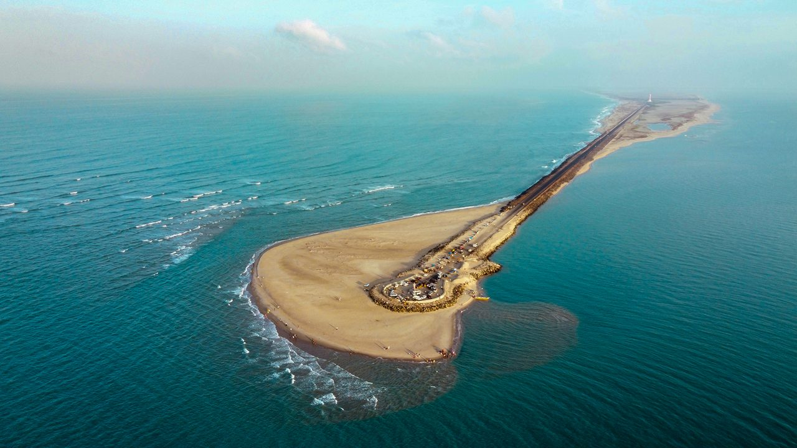
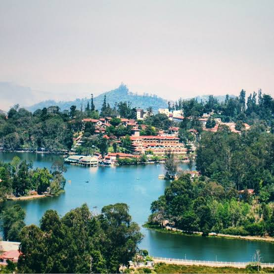
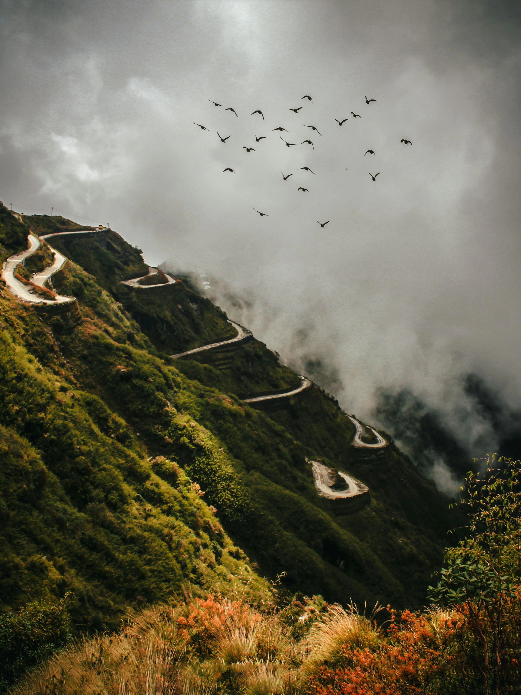
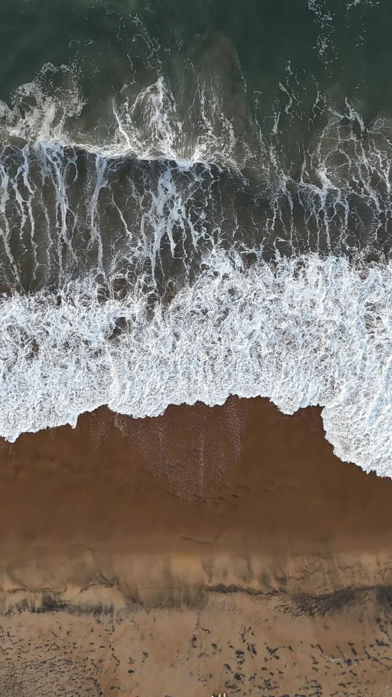

Best Destinations
Be Assured that we recommend the best destinations for you travel
Best Prices
We offer the best prices and the best services

Best Customer Support
Our customer support agents are always here 24/7 to support you
Tour Tamil Nadu
Tamil Nadu has some of the biggest tourism spots and heritage sights in the world!
Ooty
Highlights: Nilgiri Mountain Railway toy train, Ooty Lake, and the Government Botanical Garden.
Vibe: Rolling green hills, dense tea estates, and cool mountain weather.

Madurai
Highlights: Meenakshi Amman Temple, Thirumalai Nayakar Mahal, and the Gandhi Memorial Museum.
Vibe: Ancient Dravidian architecture, rich history, and vibrant local streets.

Kanyakumari
Highlights: Vivekananda Rock Memorial, Thiruvalluvar Statue, and the confluence of three oceans.
Vibe: Famous for dramatic sunrise and sunset views over the water.

Mahabalipuram
Highlights: The Shore Temple, Arjuna's Penance, and the Pancha Rathas.
Vibe: A UNESCO World Heritage coastal town known for ancient rock-cut monuments.

Rameswaram
Highlights: Ramanathaswamy Temple, Pamban Bridge, and the remote beach point of Dhanushkodi.
Vibe: A major spiritual pilgrimage site surrounded by the ocean.

Kodaikanal
Highlights: Kodaikanal Lake, Coaker's Walk, and Silver Cascade Falls.
Vibe: Misty forested slopes, cascading waterfalls, and scenic cliff-side promenades.

Be Assured that we recommend the best destinations for you travel
We offer the best prices and the best services
Our customer support agents are always here 24/7 to support you
Best Time to Visit Hill Stations
Visit Ooty and Kodaikanal between March and June to escape the heat, or between September and November when the monsoon has cleared and the views are crisp.

Best Time for Beaches
Plan Mahabalipuram, Kanyakumari and Rameswaram between November and February. The weather is cooler and the sea is calmer, and Kanyakumari's sunrise is at its best.

"Our trip to Ooty and Madurai was perfectly planned. The prices were fair and the support team answered every question, even late at night."